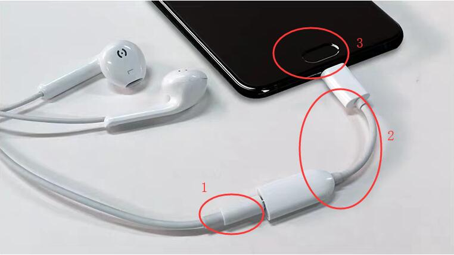

一、设计模式概括
设计模式是一套被反复使用、多数人知晓的、经过分类编目的、代码设计经验的总结。它可以提高代码的可重用性，增强系统的可维护性，以及解决一系列的复杂问题。一名软件工程师搭建的框架是否健壮、是否易维护，很大程度取决于你是否运用了设计模式。是否懂得将设计模式运用到实际项目中也是区分初级工程师与高级工程师的其中一个重要因素。
二、设计模式六大原则
1. 单一职责原则
- 定义： 一个类只有一个原因引起变化。也就是一个类只有一个职责，它就只负责一件事情。
- 通俗理解： 例如类 A 负责两个不同的职责，分别是职责 B1 与职责 B2，当职责 B1 需要修改时，就会导致类 A 的修改，这样就有可能影响到职责 B2 的功能。为了解决修改职责 B1 影响职责 B2 的功能就有了“单一职责原则”，也就是可以根据“单一职责原则 ”分别创建类 A1 和类 A2，然后类 A1 负责职责 B1，类 A2 负责职责 B2，这样就解决了相互影响的问题。
- 好处： 类的复杂性降低、可读性提高、可维护性提高、变更引起的风险降低。
2. 里氏替换原则
- 定义： 所有引用基类的地方必须能透明地使用其子类的对象。
- 通俗理解： 即只要父类能出现的地方子类就可以出现，而且替换为子类也不会产生任何错误或异常，使用者可能根本就不需要知道是父类还是子类。但是，反过来就不行了，有子类出现的地方，父类未必就能适应。
- 好处： 增强程序的健壮性，版本升级时也可以保持非常好的兼容性。即使增加子类，原有的子类还可以继续运行。
3. 依赖倒置原则
- 定义： 高层模块不应该依赖低层模块，两者都应该依赖其抽象；抽象不应该依赖细节；细节应该依赖抽象。
（注：抽象在 Java 中指接口或抽象类，细节指实现类。） - 通俗理解： 因为低层模块和细节都是多变的，而抽象则比较稳定，所以只能低层模块和细节依赖抽象，而不是抽象依赖它们。也就是说要面向接口编程。
- 好处： 降低类之间的耦合性，提高系统的稳定性，降低修改程序造成的风险。
4. 接口隔离原则
- 定义： 建立单一接口，不要建立臃肿庞大的接口。
- 通俗理解： 也就是接口要尽量细化，提供给每个模块的都应该是专门的接口，提供给几个模块就应该有几个专门的接口，而不是建立一个臃肿庞大的接口来提供给所有的模块。
- 好处： 对接口进行细化可以提高程序设计的灵活性，降低代码的耦合性；为每个模块提供专门的接口更容易提供定制服务。
5. 迪米特法则
- 定义： 一个对象应该对其他对象有最少的了解。
- 通俗理解： 例如有类 A 与类 B ，类 A 需要依赖类 B，这时类 B 只需要提供类 A 需要的 public 方法即可，而不应该暴露更多细节给类 A 知道，这样可以降低类 A 与类 B 之间的耦合。
- 好处： 可以降低类与类之间的耦合。
6. 开闭原则
- 定义： 一个软件实体如类、模块和函数应该对扩展开放，对修改关闭。
- 通俗理解： 一个软件产品在迭代升级的过程中总会发生一些变化，但是变化的内容我们不应该在原有的代码上修改，而应该通过扩展的方式来实现新的需求。例如很多开源库都会预留接口让使用者去自定义自己个性的需求，而不是让使用者修改开源库的源码来达到自己的需求。
- 好处： “对修改关闭”可以减少对原有代码的修改，保持历史代码的纯洁性，提高系统的稳定性。
三、设计模式分类
由 GoF 合著的书籍《设计模式 - 可复用的面向对象软件元素》中一共提到了 23 种设计模式，这些模式可以分为三大类：
- 创建型模式（5种）：单例模式、工厂方法模式、抽象工厂模式、建造者模式、原型模式。
- 结构型模式（7种）：适配器模式、装饰模式、代理模式、外观模式、桥接模式、组合模式、享元模式。
- 行为型模式（11种）：策略模式、模板方法模式、观察者模式、迭代器模式、责任链模式、命令模式、备忘录模式、状态模式、访问者模式、中介者模式、解释器模式。
1. 单例模式
定义
确保一个类只有一个实例，而且自行实例化并向整个系统提供这个实例。
也就是一个类在整个系统只能有一个实例，这样做的好处是防止创建多个重复对象消耗内存，而且操作 IO 和数据库等都是比较耗资源的，单例可以较少性能的开销。
简单示例
public class Singleton {
private static Singleton instance = new Singleton;
private Singleton () {
}
public static Singleton getInstance() {
return instance;
}
}上面就是一个单例模式的简单使用示例，可以看到确实是自行实例化的，并且使用的是私有构造函数，目的是为了其他地方不能通过构造函数来创建该类的实例，只能通过公共的 getInstance() 方法获取该类的实例。
单例模式的多种实现方式
实现单例模式有多种方式，具体如下：
（1） 饿汉式（线程安全）
public class Singleton {
private static Singleton instance = new Singleton();
private Singleton() {
}
public static Singleton getInstance() {
return instance;
}
}小结：在类加载的时候就初始化实例，虽然避免了多线程并发操作导致的线程安全问题，但是会造成内存的浪费，因为还没有使用这个对象就把它加载到内存中了。
（2）懒汉式（线程不安全）
public class Singleton {
private static Singleton instance;
private Singleton() {
}
public static Singleton getInstance() {
if (instance == null) {
instance = new Singleton();
}
return instance;
}
}小结：只有第一次用到的时候才初始化实例，解决了饿汉式造成内存浪费的问题，但是多线程的时候是不安全的。例如有线程 A 与线程 B 同时执行，这时候就有可能 2 个线程都同时执行到 if (instance == null)，这样就创建了 2 个实例了。所以这种方式只适用于单线程。
注：详细的多线程并发请见我的另一篇文章–>带你通俗易懂的理解——线程、多线程与线程池
（3）懒汉式（线程安全）
public class Singleton {
private static Singleton instance;
private Singleton() {
}
public static synchronized Singleton getInstance() {
if (instance == null) {
instance = new Singleton();
}
return instance;
}
}小结：在 getInstance 方法上加了同步锁，这样有多个线程的时候会等前面的线程执行完了再执行当前线程，可以解决第二种懒汉式的线程安全问题。
（4）双重校验锁（线程安全）
public class Singleton {
private volatile static Singleton instance;
private Singleton() {
}
public static Singleton getInstance() {
if (instance == null) {
synchronized (Singleton.class) {
if (instance == null) {
instance = new Singleton();
}
}
}
return instance;
}
}小结：可以看到加了双重 if (instance == null) 的判断，并且同步锁放到了方法内部，新增的第一个判空可以避免每个线程过来都去执行同步锁，可以解决同步锁造成的效率低的问题。
但是，instance = new Singleton(); 并不是一个原子操作，这一行代码可以分成 3 个步骤：
- 给 instance 分配内存
- 初始化 instance，即执行 new Singleton();
- 将 instance 对象指向分配的内存空间
而且由于 JVM 具有指令重排的特性，也就是说无法保证上面的 3 个步骤是按 1>2>3 执行的，有可能是 1>3>2。例如线程 A 执行完第 1 步与第 3 步，而没有执行第 2 步，显然 instance 是不为空的，这个时候线程 B 刚好执行到 if (instance == null) ，发现不为空就直接返回 instance，但是由于一直没有执行到第 2 步，所以 instance 虽然不为空，但是是没有初始化完成的，所以调用一个没有初始化完成的实例肯定是有问题的。
所以代码中使用了 volatile 关键字，因为它可以解决指令重排的问题，但是只能在 JDK 1.5 之后生效。而且使用 volatile 关键字也会影响一些性能问题。
（5） 静态内部类（线程安全）
public class Singleton {
private static class SingletonHolder {
private static final Singleton INSTANCE = new Singleton();
}
private Singleton() {
}
public static final Singleton getInstance() {
return SingletonHolder.INSTANCE;
}
}小结：这种方式在 Singleton 类加载的时候并没有初始化实例，而是第一次调用 getInstance() 的时候才进行初始化，可以达到延迟加载对象的作用。并且 JVM 能确保 INSTANCE 只被实例化一次。也就是这种方式可以实现双重校验锁一样的效果，而且解决了使用 volatile 关键字只能在 JDK 1.5 之后生效和影响性能的问题。但是这种方式用的人还是比较少的。
（6）枚举（线程安全）
public enum Singleton {
INSTANCE;
public void testMethod() {
}
}小结：可以说使用枚举的方式实现单例是目前最完美的方式，这种方式可以防止序列化与反射造成的创建多个实例的问题，而前面的 5 种方式默认情况是无法解决这个问题的。可能使用枚举的唯一缺点是可读性不高。
关于序列化与反射造成的创建多个实例的问题可以看看这篇文章——>为什么要用枚举实现单例模式（避免反射、序列化问题）
优点
- 由于单例模式在内存中只有一个实例，对于需要频繁实例化然后销毁的对象可以减少内存开销。
- 由于单例只有一个实例，对于创建比较耗时或者耗资源的对象可以减少系统的性能开销。
- 可以避免对资源的多重占用。
- 可以在系统设置全局的访问点，优化和共享资源访问。
缺点
- 单例模式一般没有接口，所以扩展困难，需要扩展只能修改原有的代码。
- 单例模式一般职责过多，所以与单一职责原则是有冲突的。
使用场景
- 只需要一个实例对象。
- 需要频繁实例化然后销毁的对象。
- 创建比较耗时的对象，例如访问IO和数据库等资源。
选用哪种方式实现单例模式？
以上 6 种方式各有利弊（线程安全问题、性能问题、代码复杂度与可读性问题），所以需要根据自己的项目选择合适的方式。一般建议使用第三种线程安全的懒汉式（例如系统源码 LocalBroadcastManager 就是使用该种方式），如果涉及到序列化与反射则可以使用第六种枚举的方式。
2. 工厂方法模式
定义
定义一个用于创建对象的接口，让子类决定实例化哪一个类。工厂方法使一个类的实例化延迟到其子类。
实现
工厂方法模式有四要素，分别是抽象工厂、具体工厂、产品接口、具体产品。代码如下：
- 抽象工厂
public abstract class Factory {
public abstract <T extends Product> T createProduct(Class<T> clz);
}具体工厂
public class ConcreteFactory extends Factory { @Override public <T extends Product> T createProduct(Class<T> clz) { Product product = null; String classname = clz.getName(); try { product = (Product) Class.forName(classname).newInstance(); } catch (Exception e) { e.printStackTrace(); } return (T) product; } }产品接口
public interface Product { void method(); }具体产品
public class ConcreteProductA implements Product { @Override public void method() { System.out.println("具体产品 A"); } }public class ConcreteProductB implements Product { @Override public void method() { System.out.println("具体产品 B"); } }客户端使用
public class Client { public static void main(String[] args) { Factory factory = new ConcreteFactory(); //创建产品 A Product productA = factory.createProduct(ConcreteProductA.class); productA.method(); //创建产品 B Product productB = factory.createProduct(ConcreteProductB.class); productB.method(); } }运行结果：
具体产品 A 具体产品 B
优点
客户端创建一个对象只需要知道对象的类名即可，不需要关心创建对象的细节。
新增一个产品（例如产品 C），只需要新增该产品类即可，不需要需改其他任何代码。符合设计模式六大原则中的 “开闭原则”。
使用场景
需要生成复杂对象或者需要搭建可扩展的框架时都可以使用工厂方法模式。但是对于简单对象，例如只需要通过 new 就可以完成创建的对象，无需使用工厂模式。使用工厂模式，就需要引入一个工厂类，对于简单对象反而会增加系统的复杂度。
扩展
如果一个模块只需要一个工厂类，这时候抽象工厂类的存在就没有必要了，去掉抽象工厂类就变成简单工厂模式了，也可以叫静态工厂模式。具体做法是去掉抽象工厂类，将具体工厂类中的方法改成静态方法。具体如下：
- 具体工厂
public class ConcreteFactory {
public static <T extends Product> T createProduct(Class<T> clz) {
Product product = null;
String classname = clz.getName();
try {
product = (Product) Class.forName(classname).newInstance();
} catch (Exception e) {
e.printStackTrace();
}
return (T) product;
}
}客户端使用
public class Client { public static void main(String[] args) { //创建产品 A Product productA = ConcreteFactory.createProduct(ConcreteProductA.class); productA.method(); //创建产品 B Product productB = ConcreteFactory.createProduct(ConcreteProductB.class); productB.method(); } }运行结果：
具体产品 A 具体产品 B简单工厂模式的优点是使用更简单了，但是缺点也是存在的，即工厂类的扩展变困难了。但是该种模式在实际项目中使用的还是比较多的。
3. 抽象工厂模式
定义
为创建一组相关或相互依赖的对象提供一个接口，而且无须指定它们的具体类。
与工厂方法模式相比
工厂方法模式是创建一个对象，而抽象工厂模式是创建一组对象，而且这一组对象是相关或相互依赖的。
实现
创建 A 产品家族的接口
public interface IProductA { void method(); }创建 A 产品家族的实现类，即具体产品 A1 与具体产品 A2
public class ConcreteProductA1 implements IProductA { @Override public void method() { System.out.println("具体产品 A1"); } }public class ConcreteProductA2 implements IProductA { @Override public void method() { System.out.println("具体产品 A2"); } }创建 B 产品家族的接口
public interface IProductB { void method(); }创建 B 产品家族的实现类，即具体产品 B1 与具体产品 B2
public class ConcreteProductB1 implements IProductB { @Override public void method() { System.out.println("具体产品 B1"); } }public class ConcreteProductB2 implements IProductB { @Override public void method() { System.out.println("具体产品 B2"); } }创建一个抽象工厂类用来创建 A 产品家族与 B 产品家族
public abstract class Factory { public abstract IProductA createProductA(); public abstract IProductB createProductB(); }创建抽象工厂类的实现类，即具体工厂 1 与具体工厂 2
public class ConcreteFactory1 extends Factory { @Override public IProductA createProductA() { return new ConcreteProductA1(); } @Override public IProductB createProductB() { return new ConcreteProductB1(); } }public class ConcreteFactory2 extends Factory { @Override public IProductA createProductA() { return new ConcreteProductA2(); } @Override public IProductB createProductB() { return new ConcreteProductB2(); } }客户端使用
public class Client { public static void main(String[] args) { Factory concreteFactory1 = new ConcreteFactory1(); Factory concreteFactory2 = new ConcreteFactory2(); IProductA productA1 = concreteFactory1.createProductA(); IProductA productA2 = concreteFactory2.createProductA(); IProductB productB1 = concreteFactory1.createProductB(); IProductB productB2 = concreteFactory2.createProductB(); productA1.method(); productA2.method(); productB1.method(); productB2.method(); } }运行结果：
具体产品 A1 具体产品 A2 具体产品 B1 具体产品 B2
优点
客户端创建一组对象只需要知道对应的工厂类即可，不需要关心创建对象的细节。
缺点
产品家族的扩展困难，例如增加 C 产品家族，需要修改原有的代码，违反了开闭原则。
使用场景
创建一组相关或相互依赖的对象的时候可以使用抽象工厂模式。例如需要开发一个在 Android 和 IOS 上的应用，因为是同一个类型的应用，所以 UI 和逻辑都是差不多的，只是运行的操作系统不一样而已，这时候可以使用抽象工厂模式处理不同操作系统之间的交互。
4. 模板方法模式
定义
定义一个操作中的算法的框架，而将一些步骤延迟到子类中。使得子类可以不改变一个算法的结构即可重定义该算法的某些特定步骤。
组成部分
抽象类： 定义一个操作中的算法的框架。
实现类： 一个或多个类继承抽象类，用来实现每个实现类不一样的细节。
抽象方法： 抽象类中声明的抽象方法，具体细节由子类实现。
模板方法： 抽象类中声明的普通方法并实现，该方法中又调用抽象方法完成需要的功能。一般模板方法都加上 final 关键字，不允许子类重写，为了防止子类恶意的操作。
钩子方法： 抽象类中声明的普通方法并实现，子类可以重写该方法并对它做出改变用来影响模板方法的逻辑。不是必须的，有该需求才需要。
实现
这里通过写一个洗衣机洗衣服的程序来讲解模板方法模式。洗衣机洗衣服的步骤一般是洗涤、漂洗、脱水 3 个流程，但是用过洗衣机的都知道，现在的洗衣机都是可以选择洗衣功能的，例如可以选择快洗、标准洗、洗羽绒服、洗羊毛衫等。这里拿标准洗与洗羊毛衫作为例子来讲解，不管是标准洗还是洗羊毛衫，它们的步骤都是一样的，不同的是每个步骤的力度和速度不一样。例如洗羊毛衫旋转的速度需要很慢和小力，因为羊毛衫比较容易损坏，而标准洗则可以快速转动和大力洗，一般用来洗普通衣服。
创建抽象类，定义洗衣机洗衣服的流程。
public abstract class WashingMachine { //1. 洗涤：标准洗与洗羊毛衫力度与速度不一样，由子类去实现。 abstract void wash(); //2. 漂洗：标准洗与洗羊毛衫力度与速度不一样，由子类去实现。 abstract void rinse(); //3. 脱水：标准洗与洗羊毛衫力度与速度不一样，由子类去实现。 abstract void dehydrate(); //模板方法——洗衣服：标准洗与洗羊毛衫的步骤都是一样的，直接在这里实现。 final void washClothes() { wash(); rinse(); dehydrate(); } }创建实现类，即上面例子中的标准洗与洗羊毛衫。
public class StandardWashing extends WashingMachine { @Override void wash() { System.out.println("标准洗-洗涤"); } @Override void rinse() { System.out.println("标准洗-漂洗"); } @Override void dehydrate() { System.out.println("标准洗-脱水"); } }public class WashSweater extends WashingMachine { @Override void wash() { System.out.println("洗羊毛衫-洗涤"); } @Override void rinse() { System.out.println("洗羊毛衫-漂洗"); } @Override void dehydrate() { System.out.println("洗羊毛衫-脱水"); } }客户端使用
public class Client { public static void main(String[] args) { /*标准洗*/ WashingMachine standardWashing = new StandardWashing(); standardWashing.washClothes(); /*洗羊毛衫*/ WashingMachine washSweater = new WashSweater(); washSweater.washClothes(); } }运行结果：
标准洗-洗涤 标准洗-漂洗 标准洗-脱水 洗羊毛衫-洗涤 洗羊毛衫-漂洗 洗羊毛衫-脱水
OK，上面的例子就是典型的模板方法模式。如果你是 Android 开发者，你会发现很多开源项目的 BaseActivity 使用的就是模板方法模式，抽象类是 BaseActivity，模板方法是onCreate()，抽象方法是 initLayout() 、initView()、initPresenter()，实现类是继承 BaseActivity 的子类。
优点
提高了代码的扩展性
将不变的部分封装在模板方法中，将可变的部分定义为抽象方法，由子类去实现细节可提高代码的扩展性。例如洗衣机洗衣服的例子中再增加一个洗羽绒服的 ，则只需要增加一个子类去实现抽象类即可。
便于维护
将公共的代码提取到抽象类的模板方法中，可以统一管理多个子类的执行逻辑。行为由父类控制，子类实现
细节由子类实现，在子类可以可以通过扩展的方式增加相应的功能，符合开闭原则。
缺点
每一个不同的实现都需要一个子类来实现，导致类的个数增加，使得系统更加庞大。
使用场景
多个子类有相同的方法，并且这些方法逻辑相同时可以使用该模式。
5. 建造者模式
定义
将一个复杂对象的构建与它的表示分离，使得同样的构建过程可以创建不同的表示。
建造者模式中的 4 个角色
产品类（Product）：产品类就是那个被构建的复杂对象，一般由多个部分组成。
抽象建造者（Builder）：用来规范产品的构建，构建的具体过程由子类实现，一般有构建产品和获取产品的方法。
具体建造者（ConcreteBuilder）：实现抽象建造者中的所有方法，在这个类中将产品构建好，然后通过一个方法返回产品。
导演类（Director）：负责调用抽象建造者来构建复杂的产品。
实现
这里通过写一个生产宝马汽车的例子来讲解建造者模式。生产宝马汽车需要很多零件，例如发动机、轮胎、变速器等等。而且每一个型号需要的零件都是不同的，例如宝马 X3 需要的发动机型号为 A1，宝马 X5 系需要的发动机型号为 A2。
产品类
public class Product { private String engine;//发动机 private String tire;//轮胎 private String transmission;//变速器 //展示产品 public void showProduct() { System.out.println(new StringBuffer().append(getEngine()).append(",") .append(getTire()).append(",").append(getTransmission()).toString()); } public String getEngine() { return engine; } public void setEngine(String engine) { this.engine = engine; } public String getTire() { return tire; } public void setTire(String tire) { this.tire = tire; } public String getTransmission() { return transmission; } public void setTransmission(String transmission) { this.transmission = transmission; } }抽象建造者
public abstract class Builder { //装发动机，具体由子类实现 public abstract void buildEngine(); //装轮胎，具体由子类实现 public abstract void buildTire(); //装变速器，具体由子类实现 public abstract void buildTransmission(); //获取产品 public abstract Product getProduct(); }具体建造者
宝马 X3：
public class ConcreteBuilderA extends Builder {
private Product product = new Product();
@Override
public void buildEngine() {
product.setEngine("装A1型号的发动机");
}
@Override
public void buildTire() {
product.setTire("装A1型号的轮胎");
}
@Override
public void buildTransmission() {
product.setTransmission("装A1型号的变速器");
}
@Override
public Product getProduct() {
return product;
}
}宝马 X5
public class ConcreteBuilderB extends Builder {
private Product product = new Product();
@Override
public void buildEngine() {
product.setEngine("装A2型号的发动机");
}
@Override
public void buildTire() {
product.setTire("装A2型号的轮胎");
}
@Override
public void buildTransmission() {
product.setTransmission("装A2型号的变速器");
}
@Override
public Product getProduct() {
return product;
}
}导演类
public class Director { private Builder builder; public Director(Builder builder) { this.builder = builder; } public void construct() { builder.buildEngine(); builder.buildTire(); builder.buildTransmission(); } }客户端使用
public class Client { public static void main(String[] args) { /*生产宝马 X3*/ Builder builder = new ConcreteBuilderA(); Director director = new Director(builder); director.construct(); builder.getProduct().showProduct(); /*生产宝马 X5*/ builder = new ConcreteBuilderB(); director = new Director(builder); director.construct(); builder.getProduct().showProduct(); } }
运行结果：
装A1型号的发动机,装A1型号的轮胎,装A1型号的变速器
装A2型号的发动机,装A2型号的轮胎,装A2型号的变速器即第一个为生产宝马 X3，第二个为生产宝马 X5。
优点
封装性好
客户端不必知道产品内部组成的细节，如例子中客户端只需要知道导演类和具体建造者即可创建一个产品。扩展方便
每一个具体建造者都是相互独立的，新增具体建造者不影响已有的具体建造者。例如例子中如果还想生产宝马 X6 的汽车，只需要新增一个宝马 X6 的具体建造者即可。提高了系统的扩展性，符合“开闭原则”。
使用场景
- 需要创建的对象非常复杂，但是他们有共同的属性。
- 创建对象的过程相同，但是对象中每个细节又不同。
6. 代理模式
定义
为其他对象提供一种代理以控制对这个对象的访问。
实现
这里通过买家找代购购买东西的例子来讲解代理模式。
静态代理
静态代理需要在实现阶段就知道被代理的对象。
创建抽象对象接口，定义一个购买东西的方法。如下：
public interface Subject { void buy(); }创建具体对象类（小明找代购购买港版 iPhone），实现抽象对象接口。如下：
public class RealSubject implements Subject { @Override public void buy() { System.out.println("购买港版 iPhone"); } }创建代理对象类，实现抽象对象接口。如下：
public class Proxy implements Subject { @Override public void buy() { //创建被代理的对象 RealSubject realSubject = new RealSubject(); //购买东西 realSubject.buy(); //邮寄 post(); } public void post() { System.out.println("将买好的东西邮寄给买家"); } }客户端使用
public class Client { public static void main(String[] args) { Subject proxy = new Proxy(); proxy.buy(); } }
运行结果：
购买港版 iPhone
将买好的东西邮寄给买家动态代理
动态代理是在实现阶段不用关心代理谁，而在运行阶段才指定代理哪一个对象。
实现动态代理只需要修改静态代理的代理类与客户端类即可，如下：
动态代理类
public class DynamicProxy implements InvocationHandler { private Object mObject; /** * 生成动态代理对象 * * @param object 被代理对象 */ public Object newProxyInstance(Object object) { this.mObject = object; //获得 ClassLoader ClassLoader classLoader = object.getClass().getClassLoader(); //获得接口数组 Class<?>[] interfaces = object.getClass().getInterfaces(); //生成动态代理对象 return Proxy.newProxyInstance(object.getClass().getClassLoader(), object.getClass().getInterfaces(), this); } /** * InvocationHandler 接口需要重写的方法（这里会调用被代理的方法） * * @param proxy 动态代理对象 * @param method 被代理对象的方法 * @param args 指定被调用方法的参数 */ @Override public Object invoke(Object proxy, Method method, Object[] args) throws Throwable { //通过Java反射机制调用被代理对象的方法 Object result = method.invoke(this.mObject, args); //邮寄 post(); return result; } public void post() { System.out.println("将买好的东西邮寄给买家"); } }客户端使用
public class Client { public static void main(String[] args) { DynamicProxy DynamicProxy = new DynamicProxy(); RealSubject realSubject = new RealSubject(); Subject subject = (Subject) DynamicProxy.newProxyInstance(realSubject); //这里会先调用 DynamicProxy 类中的 invoke() 方法，然后再通过该方法中的反射机制来调用被代理对象（RealSubject）的 buy() 方法 subject.buy(); } }
运行结果：
购买港版 iPhone
将买好的东西邮寄给买家如果这时候小红也需要找这个代购购买一瓶神仙水，则只需要再增加一个具体对象类即可。如下：
创建具体对象类（小红找代购购买神仙水），实现抽象对象接口。
public class RealSubject2 implements Subject {
@Override
public void buy() {
System.out.println("购买神仙水");
}
}可以看到这里不需要再修改代理类，即一个代理类可以代理多个对象，这就是动态代理的好处。缺点是需要通过反射机制间接调用被代理类的方法，相比静态代理降低了效率。还有就是要实现动态代理，则被代理类必须实现一个接口，增加了使用的局限性。
优点
- 降低耦合度
客户端不需要知道具体对象类的实现细节，只需要通过一个代理即可完成具体对象类需要实现的功能，降低了系统的耦合度。 - 灵活性好
具体对象类的实现细节可以随时修改，而不需要修改代理类，因为具体对象类和代理类都实现了同一个接口，提高了代码的灵活性。
使用场景
- 远程代理：当客户端对象需要访问远程主机中的对象时。
- 虚拟代理：用一个资源消耗小的对象代理一个资源消耗大的对象时。
- 保护代理：当需要控制对一个对象的访问，为不同用户提供不同级别的访问权限时。
- 缓冲代理：当需要为某一个被频繁访问的操作结果提供一个临时存储空间，以供多个客户端共享访问这些结果时。
- 智能引用代理：当需要为一个对象的访问（引用）提供一些额外的操作时，例如将对象被调用的次数记录下来。
- AOP 相关：采用动态代理机制实现。
7. 装饰模式
定义
动态地给一个对象添加一些额外的职责。就增加功能来说，装饰模式相比生成子类更为灵活。
装饰模式中的 4 个角色：
- 抽象构件（Component）：接口或者抽象类，定义最核心、最原始的对象。
- 具体构件（ConcreteComponent）：抽象构件的子类，需要被装饰的对象。
- 抽象装饰者（Decorator）：用来给具体构件添加职责，具体添加的职责在子类实现，因为每个子类添加的职责可能不同。
- 具体装饰者（ConcreteDecorator）：抽象装饰者的子类，每个具体装饰者添加的职责可能不同。
实现
这里通过化妆的例子来讲解装饰模式。例如某大学的迎新晚会有个小品节目需要一个人演老爷爷，但是大学生一般都是很年轻的嘛，直接找个人来表演那肯定不行的，所以需要经过装饰，也就是需要给这个人先化妆。代码实现如下：
抽象构件
public interface Actor { /** * （演员）出场 */ void appearance(); }具体构件
public class ActorXiaoMing implements Actor { @Override public void appearance() { System.out.println("出场了"); } }抽象装饰者
public class Decorator implements Actor { private Actor mActor = null; //通过构造函数传递被修饰者 public Decorator(Actor actor) { this.mActor = actor; } //委托给被修饰者执行 @Override public void appearance() { mActor.appearance(); } }具体装饰者（画上白头发）
public class WhiteHairDecorator extends Decorator { //定义被修饰者 public WhiteHairDecorator(Actor actor) { super(actor); } //定义自己的修饰方法（化妆） private void makeup() { System.out.println("白头发"); } //重写父类的方法 @Override public void appearance() { this.makeup(); super.appearance(); } }具体装饰者（画上白胡须）
public class WhiteBeardDecorator extends Decorator { //定义被修饰者 public WhiteBeardDecorator(Actor actor) { super(actor); } //定义自己的修饰方法（化妆） private void makeup() { System.out.println("白胡须"); } //重写父类的方法 @Override public void appearance() { this.makeup(); super.appearance(); } }客户端使用
public class Client { public static void main(String[] args) { //没化妆的小明 Actor component = new ActorXiaoMing(); //给小明画了白头发 component = new WhiteHairDecorator(component); //给小明画了白胡须 component = new WhiteBeardDecorator(component); //化完妆，要出场了 component.appearance(); } }运行结果：
白胡须 白头发 出场了可以看到运行结果是一个白胡须、白头发的老爷爷出场，但是卸了妆还是一个黑胡须、黑头发的帅气小伙子出场，这就是装饰模式。
优点
- 装饰类和被装饰类可以独立发展，不会相互耦合。
- 装饰模式是继承关系的一个替代方案。
- 装饰模式可以动态地扩展一个实现类的功能。例如例子中如果还需要画点皱纹，那么直接增加一个皱纹的具体装饰类即可，非常方便。
缺点
多层的装饰是比较复杂的，会增加系统的复杂度。
使用场景
- 需要扩展一个类的功能的时候。
- 需要动态地给一个对象添加或撤销功能的时候。
8. 适配器模式
定义
将一个类的接口变换成客户端所期待的另一种接口，从而使原本因接口不匹配而无法在一起工作的两个类能够在一起工作。
适配器模式中的 3 个角色
- 目标角色（Target）：期望得到的接口。
- 源角色（Adaptee）：需要适配的类。
- 适配器角色（Adapter）：把源角色转换为目标角色。
实现
这里通过 Type-C 转 3.5 耳机口的例子来讲解适配器模式。目前市面上新手机的充电端口和耳机端口是共用一个 Type-C 端口，而市面上大多数耳机的插头还是圆形插头，需要 3.5 耳机口才能匹配，所以拿这种耳机的插头是不能插入新手机的。为了这种耳机能插入 Type-C 端口的手机，厂家就生产了一种转接线，即 Type-C 转 3.5 耳机口的转接线，这个转接线就是一种适配器。具体如图：

图中，1 为目标角色，2 为适配器，3 为源角色。
适配器模式可分为类适配器和对象适配器两种，所以这里分两种方式实现。
类适配器
类适配器中适配器与适配者之间是继承（或实现）关系。
目标角色
public interface Headset { //耳机插头需要 3.5 耳机口 void headset_3_5_port(); }源角色
public class MobilePhone { //手机的 Type-C 端口 public void typeCPort() { System.out.println("插入 Type-C 端口"); } }适配器角色
class Adapter extends MobilePhone implements Headset { //headset_3_5_port() 方法中调用了 typeCPort() 方法，也就实现了将 Type-C 端口转成 3.5 耳机口。 @Override public void headset_3_5_port() { this.typeCPort(); } }客户端使用
public class Client { public static void main(String[] args) { Headset headset = new Adapter(); //可以看到，表面是耳机插入了 3.5 耳机口 //但是 headset_3_5_port() 方法内部调用的是 Phone 的 typeCPort() 方法 //所以通过适配器，耳机实际插入了 Type-C 端口 headset.headset_3_5_port(); } }
运行结果：
插入 Type-C 端口对象适配器
对象适配器中适配器与适配者之间是关联关系。
目标角色
public interface Headset { //耳机插头需要 3.5 耳机口 void headset_3_5_port(); }源角色
public class MobilePhone { //手机的 Type-C 端口 public void typeCPort() { System.out.println("插入 Type-C 端口"); } }适配器角色
class Adapter implements Headset { private MobilePhone mAdaptee; //通过构造函数传入需要适配的类 public Adapter(MobilePhone adaptee) { this.mAdaptee = adaptee; } //headset_3_5_port() 方法中调用了 typeCPort() 方法，也就实现了将 Type-C 端口转成 3.5 耳机口。 @Override public void headset_3_5_port() { this.mAdaptee.typeCPort(); } }客户端使用
public class Client { public static void main(String[] args) { MobilePhone mobilePhone = new MobilePhone(); Headset headset = new Adapter(mobilePhone); //可以看到，表面是耳机插入了 3.5 耳机口 //但是 headset_3_5_port() 方法内部调用的是 Phone 的 typeCPort() 方法 //所以通过适配器，耳机实际插入了 Type-C 端口 headset.headset_3_5_port(); } }运行结果：
插入 Type-C 端口可以看到，相比类适配器，对象适配器代码中只修改了适配器和客户端这 2 个类，其中适配器改成通过构造函数传入需要适配的类，而不是通过继承。
优点
- 提高了代码的复用性
例如例子中，耳机插头与手机端口不匹配，这时候不需要更换手机，而是通过一个适配器即可解决。 - 增加了类的透明性
客户端任然是使用原来的接口调用原来的方法，而不需要知道具体的实现，对客户端而言是透明的。 - 符合开闭原则
增加新的适配类不需要修改原有的代码，只需要增加一个适配器即可。 - 灵活性好
适配器可随时更换，也可以选择是否使用适配器。
缺点
过多地使用适配器，会让系统非常零乱，不易整体进行把握。
使用场景
有动机的修改一个正常运行的接口，可以考虑使用适配器模式。例如系统扩展了，需要使用一个已有或新建立的类，但这个类又不符合系统的接口，可以使用适配器模式将这个类变换成符合系统的接口。
9. 观察者模式
定义
定义对象间一种一对多的依赖关系，使得每当一个对象改变状态，则所有依赖于它的对象都会得到通知并被自动更新。
观察者模式中的 4 个角色
- 抽象观察者（Observer）：具体观察者需要实现的接口，在这里定义所有具体观察者需要实现的方法，即收到消息后的更新操作。
- 具体观察者（ConcreteObserver）：定义具体观察者自己的业务逻辑，即收到消息后每个具体观察者处理消息的细节可能是不同的。
- 抽象被观察者（Subject）：抽象被观察者把所有对观察者对象的引用保存在一个集合中，并可以动态的增加和删除观察者。
- 具体被观察者（ConcreteSubject）：定义被观察者自己的业务逻辑，同时定义对哪些事件进行通知。
实现
这里通过抢购商品的例子来讲解观察者模式。例如淘宝某店铺策划了一个双十一当天零点前 100 名半价的活动，这么优惠的活动我们当然要参与啦！这时候我们就会守在手机前面，等到零点马上开抢。这就是观察者模式，其中某个优惠商品是被观察者，买家是观察者。
自定义观察者模式
抽象观察者
public interface Observer { //收到消息后的更新操作 void update(); }具体观察者（买家）
public class Buyer implements Observer { public void update() { System.out.println("我要开始买啦！"); } }抽象被观察者
public abstract class Subject { //定义一个观察者数组 private List<Observer> list = new ArrayList<Observer>(); //增加一个观察者 public void addObserver(Observer o) { this.list.add(o); } //删除一个观察者 public void delObserver(Observer o) { this.list.remove(o); } //通知所有观察者 public void notifyObservers() { for (Observer observer : list) { observer.update(); } } }具体被观察者（优惠商品）
public class DiscountedGoods extends Subject { //活动开始 public void activityBegin() { System.out.println("活动开始啦！"); super.notifyObservers();//活动开始，通知观察者 } }客户端使用
public class Client { public static void main(String[] args) { //创建被观察者 DiscountedGoods discountedGoods = new DiscountedGoods(); //创建观察者 Observer observer = new Buyer(); //观察者观察被观察者 discountedGoods.addObserver(observer); //观察者开始某个业务了 discountedGoods.activityBegin(); } }
运行结果：
活动开始啦！
我要开始买啦！Java 中自带的观察者模式
其实 Java 语言中已经提供了自带的观察者模式， 分别是 java.util 包下的 Observable 类和 Observer 接口，他们分别对应我们上面例子中的抽象观察者（Observer）与抽象被观察者（Subject）。代码实现如下：
具体观察者（买家）
将自定义中的 Observer 换成 java.util 包下的 Observer，update() 方法同样换成该包下的，其他不变。如下：import java.util.Observable; import java.util.Observer; public class Buyer implements Observer { @Override public void update(Observable o, Object arg) { System.out.println("我要开始买啦！"); } }具体被观察者（优惠商品）
将自定义中的 Subject 换成 java.util 包下的 Observable，notifyObservers() 方法同样换成该包下的，还有个特殊的地方就是调用 notifyObservers() 方法前需要先调用 setChanged() 方法，该方法用来标记被观察者已经改变。其他代码不变。如下：import java.util.Observable; public class DiscountedGoods extends Observable { //活动开始 public void activityBegin() { System.out.println("活动开始啦！"); super.setChanged();//标记被观察者已经改变 super.notifyObservers();//活动开始，通知观察者 } }客户端使用
将自定义中的 Observer 换成 java.util 包下的 Observer，其他不变。如下：import java.util.Observer; public class Client { public static void main(String[] args) { //创建被观察者 DiscountedGoods discountedGoods = new DiscountedGoods(); //创建观察者 Observer observer = new Buyer(); //观察者观察被观察者 discountedGoods.addObserver(observer); //观察者开始某个业务了 discountedGoods.activityBegin(); } }运行结果：
活动开始啦！ 我要开始买啦！
可以看到，使用 Java 中自带的观察者模式实现可以少写 2 个类，分别是抽象观察者（Observer）与抽象被观察者（Subject），但是运行结果还是一样的。
优点
- 观察者和被观察者是抽象耦合的，容易扩展。
- 建立一套触发机制。
缺点
- 一个被观察者，多个观察者，开发和调试会比较复杂，效率降低。
- 消息的通知默认是顺序执行，一个观察者卡主，会影响整体的执行效率。可以采用异步的方式解决。
使用场景
- 关联行为场景。
- 事件多级触发场景。
- 跨系统的消息交换场景，如消息队列的处理机制。
10. 责任链模式
定义
使多个对象都有机会处理请求，从而避免了请求的发送者和接受者之间的耦合关系。将这些对象连成一条链，并沿着这条链传递该请求，直到有对象处理它为止。
责任链模式中的 2 个角色
抽象处理者（Handler）：是一个抽象类，定义了一个处理请求和一个设置下一个处理对象的方法。前者为抽象方法，将处理请求的细节由具体处理者实现，后者用来指定责任链中的下一个处理者。
具体处理者（ConcreteHandler）：处理请求的细节在这里实现，在这里首先会判断当前请求是否属于自己处理，如果是就直接处理，不是则传递给下一个处理者。
实现
这里通过公司员工请假的例子来讲解责任链模式。例如，某公司的请假制度为：
请假小于等于 2 天，部门经理可以批准。
请假小于等于 5 天，总经理可以批准。
请假小于等于 15 天，董事长可以批准。
请假大于 15 天，不予批准。
这样 1、2、3 对应的人物就是责任链中的具体处理者。
抽象处理者（领导）
public abstract class Leader { private Leader mLeader; /** * 设置下一个领导 */ public void setNextLeader(Leader leader) { this.mLeader = leader; } public Leader getLeader() { return mLeader; } /** * 处理请求的方法 * * @param type 请假类型 */ public abstract String handleRequest(int type); }具体处理者（部门经理）
public class DepartmentManager extends Leader { @Override public String handleRequest(int type) { String result = ""; if (LeaveType.DAY_2 == type) { //请假小于等于 2 天，是我来处理 result = "部门经理批准了你的请假"; } else { //不属于我处理 if (getLeader() != null) { //还有其他领导，那就传给下一个处理吧 result = getLeader().handleRequest(type); } else { //没有人能处理 result = "抱歉，没有人能处理你的请假"; } } return result; } }具体处理者（总经理）
public class GeneralManager extends Leader { @Override public String handleRequest(int type) { String result = ""; if (LeaveType.DAY_5 == type) { //请假小于等于 5 天，是我来处理 result = "总经理批准了你的请假"; } else { //不属于我处理 if (getLeader() != null) { //还有其他领导，那就传给下一个处理吧 result = getLeader().handleRequest(type); } else { //没有人能处理 result = "抱歉，没有人能处理你的请假"; } } return result; } }具体处理者（董事长）
public class Chairman extends Leader { @Override public String handleRequest(int type) { String result = ""; if (LeaveType.DAY_15 == type) { //请假小于等于 15 天，是我来处理 result = "董事长批准了你的请假"; } else { //不属于我处理 if (getLeader() != null) { //还有其他领导，那就传给下一个处理吧 result = getLeader().handleRequest(type); } else { //没有人能处理 result = "抱歉，没有人能处理你的请假"; } } return result; } }请假类型
public interface LeaveType { int DAY_2 = 0; //请假小于等于 2 天 int DAY_5 = 1; //请假小于等于 5 天 int DAY_15 = 2; //请假小于等于 15 天 int DAY_OTHER = 3; //请假大于 15 天 }客户端使用
public class Client { public static void main(String[] args) { Leader departmentManager = new DepartmentManager(); Leader generalManager = new GeneralManager(); Leader chairman = new Chairman(); departmentManager.setNextLeader(generalManager); generalManager.setNextLeader(chairman); /*张三请 2 天假*/ System.out.println("张三需要请 2 天假"); System.out.println(departmentManager.handleRequest(LeaveType.DAY_2)); /*李四请 5 天假*/ System.out.println("李四需要请 5 天假"); System.out.println(departmentManager.handleRequest(LeaveType.DAY_5)); /*王五请 15 天假*/ System.out.println("王五需要请 15 天假"); System.out.println(departmentManager.handleRequest(LeaveType.DAY_15)); /*赵六请 20 天假*/ System.out.println("赵六需要请 20 天假"); System.out.println(departmentManager.handleRequest(LeaveType.DAY_OTHER)); } }
运行结果：
张三需要请 2 天假
部门经理批准了你的请假
李四需要请 5 天假
总经理批准了你的请假
王五需要请 15 天假
董事长批准了你的请假
赵六需要请 20 天假
抱歉，没有人能处理你的请假优点
将请求与处理分开，请求者不需要知道是谁处理的。每个处理者只需要处理自己可以处理的请求，不需要知道整条链的结构，降低了系统的耦合度。例如李四请 5 天假，他不需要知道具体向哪个领导请假，统一交给他的部门经理即可。
增加新的具体处理者不需要修改其他原有的处理者，只需要修改客户端的代码即可，符合“开闭原则”。例如公司请假制度增加了请假一天直接找小组长请就可以了，这样只需要增加一个小组长的具体处理者即可。
缺点
由于并不知道谁会处理，所以有可能会遍历链中的所有处理者，如果链比较长，会影响性能。
由于责任链采用类似递归的方式，所以链比较长的时候调试不方便。
使用场景
有多个对象可以处理同一个请求，但是又不知道具体谁会处理的时候可以使用责任链模式。
四、设计模式相关 demo
参考资料
- 《设计模式之禅》
- design-pattern-tutorial
- CyC2018/CS-Notes
- 网上一些零散的博客